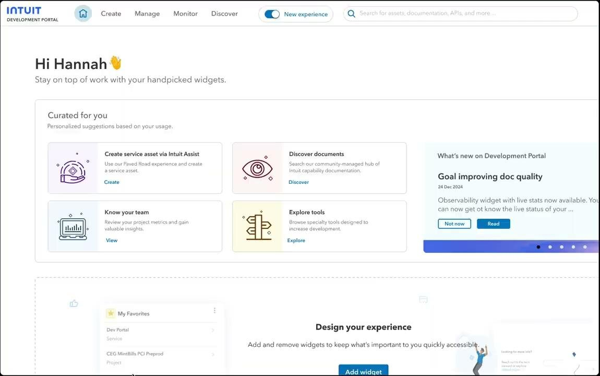
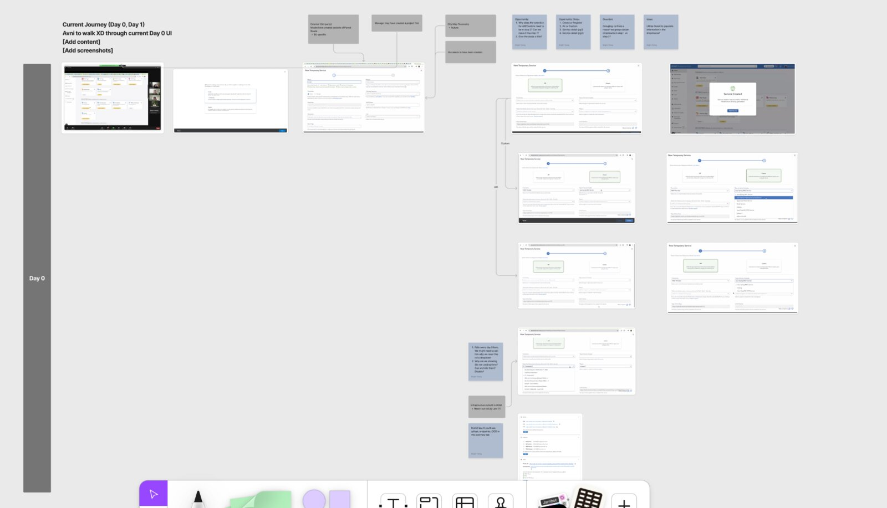
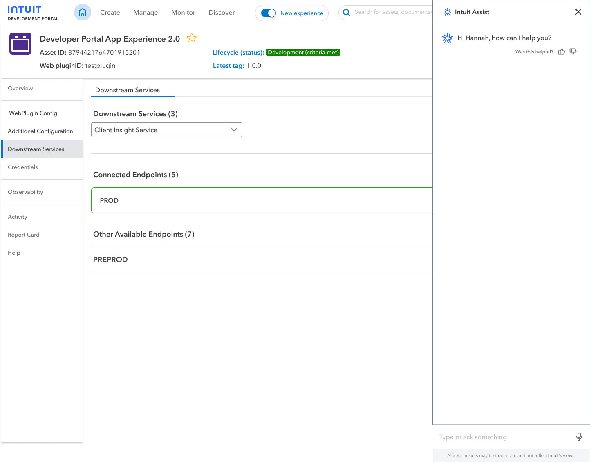
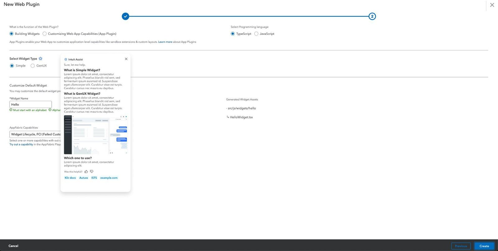
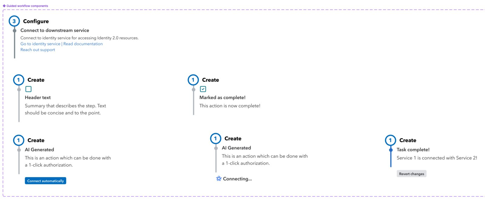
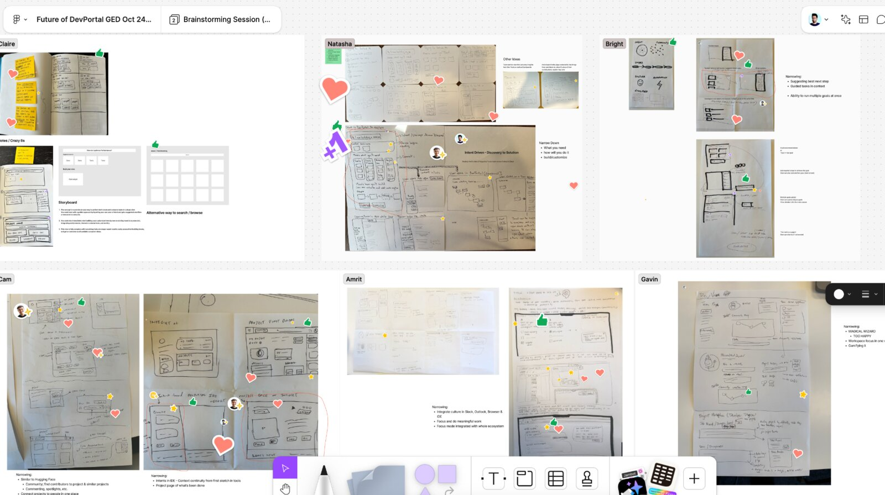
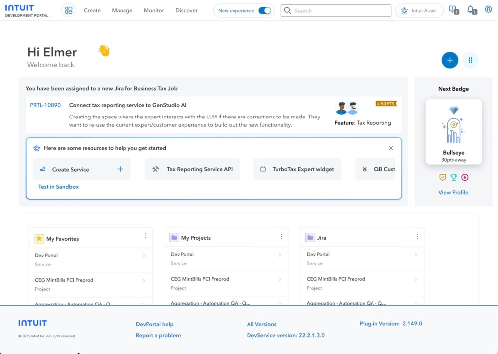

AI Paved-Path Service Creation
A guided, AI-assisted way for developers to create and configure new services — from a design-led bet with no product roadmap behind it, to a CTO-approved part of Intuit's FY26 strategy.

Backend infrastructure is usually divided into smaller pieces — code, APIs, databases — deployed independently, like LEGO blocks. Those blocks come together to build an entire application: TurboTax has one login lego, one payment lego, one tax-form lego, and so on. Knowing which blocks to snap together, and in what order, was almost entirely tribal knowledge.
The bet was that AI could change that: create and deploy services on a developer's behalf, then help them assemble complex applications through guided, configuration-driven experiences instead of hand-built plumbing every time.
The business case was velocity. Dev velocity was running about 30% under target, and velocity and PR-merge rate are the two clearest signals of whether engineering is actually hitting production targets — which flows straight through to revenue and how fast the org can innovate.
It started with user interviews mapping developers' actual end-to-end flow for standing up a new service — where the bottlenecks and pain points really were, not where we assumed they'd be. That fed directly into vision setting and alignment on what to build next.
The clearest reframe came from an analogy: it's like trying to build a LEGO train. You know you want a train. There are instructions for building the suspension, and instructions for the engine — but nothing for the whole train. Developers knew the north-star goal; they didn't know how to get there. That gap, not any single missing feature, was the actual problem.

The first concept proposed a chat interface in place of a form-filling UI, paired with a guided experience for doing configuration. Presenting that demo to the GenAI Web Plugin development team and PM led to an exploration of a full chat assistant — but further testing showed an immersive chat panel wasn't the right shape for this task. The alternative that stuck was a micro-assist embedded directly in the creation flow: contextual help exactly where a developer was stuck, instead of a separate conversation to context-switch into.
A third round of demos, this time with the Intuit Kubernetes Services dev team, surfaced a gap the concept hadn't covered — developers often work multiple configuration goals at once — which led to adding a dedicated tab for managing and updating several goals in parallel. From there, the guided-workflow components themselves got built out: steps that could be marked complete, AI-generated actions with one-click authorization, and a live "connecting" state that confirms when two services are actually wired together.



"Good job guys. I want you to show this at GED. Can you work with Avni to identify a developer to build this?" — Director of Product
That director-level greenlight sent the concept to Global Engineering Days, Intuit's internal hackathon — where it generated enough interest from the developer community to justify more engineering demos. A round of concept testing across multiple teams surfaced edge cases, additional use cases, and constraints the earlier rounds had missed. One developer put it simply: "I appreciate the guided experience. Now I don't need to worry how to navigate through."
From there it was about tying the work to something bigger — a design workshop with the Horizons and Apex design groups connected the guided workflow to a broader platform experience, and more prototyping produced a real start-to-finish journey instead of a handful of disconnected screens. Contributing demos, the research deck, and the underlying thinking to a strategic paper turned all of it into a pitch a CTO could actually approve.


The project got CTO-level approval for FY26 strategic intake. Guided, AI-assisted service creation is now part of the actual product roadmap — not just a design team's side bet — and teams are building POCs and MVPs off the concepts from this work.